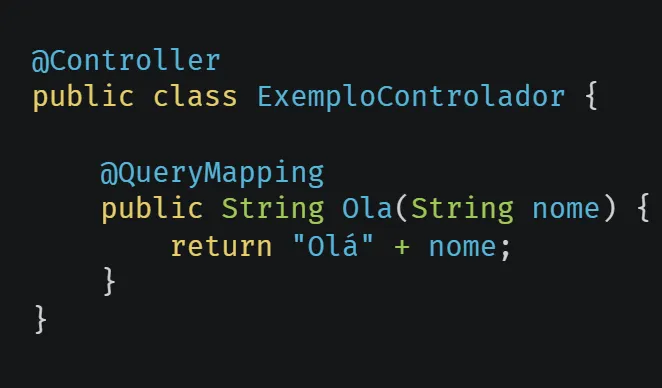
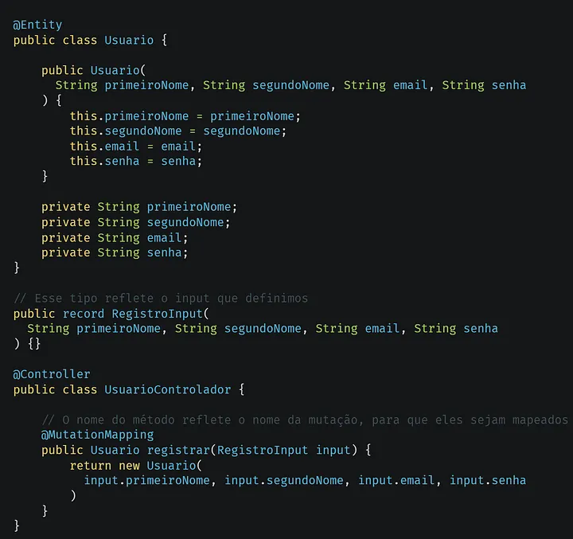

Criando uma API GraphQL com Java Spring Boot — Parte 5: Controladores
Neste artigo explicaremos sobre controladores no Spring Boot, e seus mapeamentos com GraphQL.

Exemplo de controlador Spring com GraphQL.
O que são controladores?
Controladores são classes que interceptam as requisições, e mapeiam elas para os determinados serviços, os serviços são executados e depois retornam uma resposta para o controlador, e com isso o controlador retorna a mesma resposta pro cliente da requisição, assim criando um fluxo de requisição e resposta na API.
Mapas do Spring for GraphQL
O Spring for GraphQL (dependência que adicionamos no começo da nossa aplicação) oferece mapas específicos para Queries, Mutations e Subscriptions, entretanto devemos sempre retorna o tipo especificado no nosso Schema GraphQL, que definimos antes. A primeira imagem desse artigo cita um exemplo de controlador com mapeamento de Query no GraphQL, iremos fazer mais deles para as outras operações que definimos. Abaixo um exemplo de controlador mais avançado.

Exemplo de controlador avançado no Spring for GraphQL.
Construindo controladores da API
Teremos dois controladores, um para mapear as operações relacionadas ao gerenciamento do usuário, e outra para as operações de gerenciamento de tarefas de um usuário, vamos implementar a base deles, mas não iremos retorna nada, porque não temos o resto da arquitetura da aplicação, então voltaremos aqui de novo para completar-mos.
Exemplo de controlador do usuário.Exemplo de controlador de tarefas.
Agora criaremos os inputs relativos aos controladores.
Exemplo de inputs do usuário.Exemplo de inputs das tarefas.
E acabamos por aqui, abaixo como de costume alguns links relacionados ao tópico.